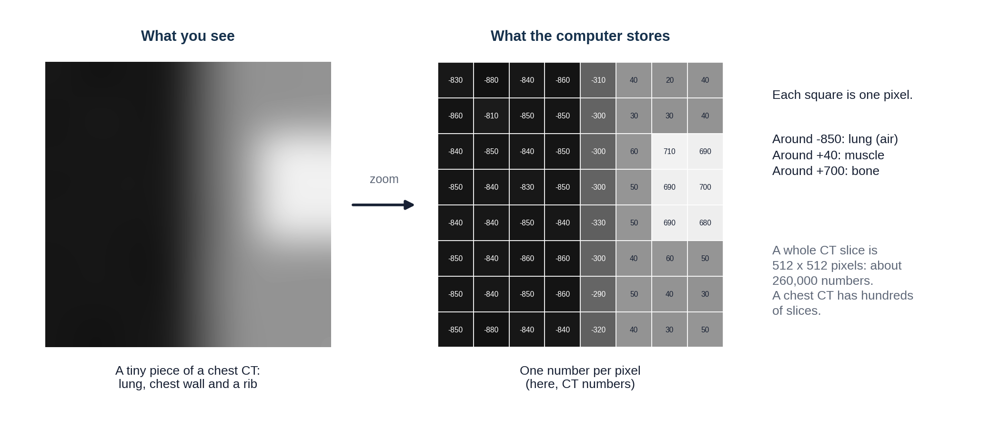
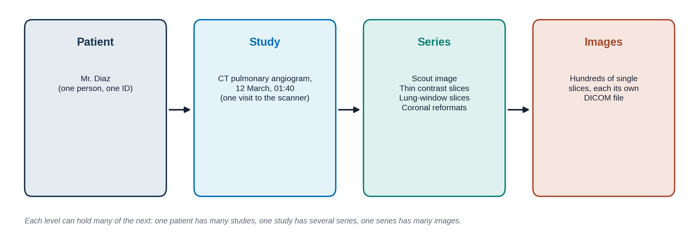

Overview
Mr. Diaz's CT pulmonary angiogram (CTPA) took about ten seconds. What came out of the scanner is not a picture in the everyday sense. It is a stack of files full of numbers, plus a lot of information about the patient and the scan. This lesson opens those files. It is the "data" half of everything you learned about AI in Module 1. About 15-20 minutes.
By the end of this lesson you can:
- Explain that a digital image is a grid of numbers, and what a CT number (Hounsfield unit) means.
- Describe what a DICOM file holds, and why its hidden information matters for AI.
- Use windowing to show different tissues on the same CT slice.
- Name common image quality problems and how they can fool a person or a model.
- Explain how images are de-identified and turned into the public datasets many AI tools learn from.
An image is a grid of numbers
Every digital image is made of tiny squares called pixels (picture elements). Each pixel holds one number, and the screen turns that number into a shade of gray. On a phone photo, each pixel has three numbers for red, green and blue. Most medical images are grayscale, so one number is enough.

On CT, the number in each pixel has a fixed meaning. It is a CT number, measured in Hounsfield units (HU), named after Godfrey Hounsfield, who built the first CT scanner. The scale is pinned to two points: water is 0 and air is -1000. Fat is about -100, blood and muscle about +40, contrast-filled blood around +300, and dense bone +1000 or more. That is the scale from Lesson 2.1's density figure, now with numbers attached.
Because a CT slice is a slice of a volume, each pixel actually stands for a tiny block of tissue, called a voxel (volume element), often under 1 mm on each side. A typical CT slice is 512 by 512 pixels, and a chest CT has hundreds of slices: tens of millions of numbers for one scan. X-ray and MRI pixels also hold numbers, but they have no fixed scale like HU: the same tissue can get different numbers on different machines. Remember that for the section on AI below.
A doctor looks at an image. An AI model only ever receives a grid of numbers. What could change those numbers without changing the patient? (Scanner brand, settings, contrast timing, patient movement, a different hospital's software. Keep your list in mind; Lesson 1.5's "distribution shift" lives here.)
DICOM: a letter in an envelope
Medical images are stored in a standard format called DICOM (Digital Imaging and Communications in Medicine). Every scanner and every viewing system in the world speaks it, which is why an image from one company's scanner can be opened on another company's workstation.
A useful way to picture a DICOM file is a letter in an envelope. The letter is the pixel data: the grid of numbers. The envelope is the header (also called metadata, "data about the data"): hundreds of labeled fields saying who the patient is, which scanner made the image, how it was made and where this slice sits in the body.

Click through the tabs to see what is written on Mr. Diaz's "envelope." The values are made up but the field names are real.
Who the patient is
Protected health information: removed before images are shared for research
| Field | Value |
|---|---|
| Patient's Name | DIAZ^MIGUEL |
| Patient ID | MRN 00482217 |
| Patient's Birth Date | 19640219 |
| Patient's Sex | M |
| Institution Name | CITY GENERAL HOSPITAL |
MRN means medical record number. Dates are written year, month, day.
What exam this is
Lets the viewer sort images into the right study and series
| Field | Value |
|---|---|
| Modality | CT |
| Study Description | CT ANGIO CHEST PE PROTOCOL |
| Study Date / Time | 20260312 / 014012 |
| Accession Number | A9917342 (the order number; links images to the order and the report) |
| Series Description | 1.0mm CTA SOFT TISSUE |
| Body Part Examined | CHEST |
How the image was made
The part people rarely look at, and AI models quietly pick up
| Field | Value |
|---|---|
| Manufacturer | (scanner company) |
| Slice Thickness | 1.0 (mm) |
| KVP | 100 (the X-ray tube voltage) |
| Contrast Bolus Agent | IODINATED, 70 mL |
| Window Center / Width | 40 / 400 (the default display setting; see Windowing below) |
| Slice Location | -112.5 (where this slice is along the body, in mm) |
The letter itself
The grid of numbers
| Field | Value |
|---|---|
| Rows / Columns | 512 / 512 |
| Pixel Spacing | 0.74 / 0.74 (mm per pixel) |
| Bits Stored | 12 (each pixel can hold one of 4,096 values) |
| Rescale Slope / Intercept | 1 / -1024 (how to turn stored values into HU) |
| Pixel Data | 262,144 numbers |
The screen can show only about 256 shades of gray, and the eye can tell apart fewer still. That is why you need windowing.
Why the envelope matters for AI
In Lesson 1.5 you saw an AI that learned to spot the hospital instead of the disease. The header and the pixels themselves carry many such clues: the scanner brand, a "PORTABLE" label burned into the corner, the slice thickness, the hospital's name. A model can learn any pattern that happens to go along with the label. Good AI developers check which scanners and hospitals their data came from, and test on data from somewhere else. The header is also how an AI tool knows which images to look at: a chest CT tool that receives a head CT because the Body Part field was wrong may still give an answer.
Windowing: one slice, many pictures
A CT slice holds values from -1000 to over +1000, but the screen can only show a limited number of grays. So the viewer shows just a slice of the range at a time, called the window:
- The level (or center) is the CT number in the middle of the window. It becomes mid-gray.
- The width is how wide a range of CT numbers gets spread across black to white. Everything below the window is pure black; everything above it is pure white.
A narrow window shows small differences between similar tissues. A wide window shows many tissues but flattens the differences. Radiologists switch windows constantly while they read.
This is a drawn slice through a chest at the level of the heart, made for this lesson; it is not a real patient. It has a clot in one lung artery and a small nodule hiding in it, like Mr. Diaz. Try the preset windows, then move the sliders. Point at the image to read the CT number under the cursor.
Notice that the clot is invisible in the lung window and the nodule is invisible in the soft-tissue window. A reader, or an AI tool, that only looks at one window can miss half the findings. Many AI models are given images in one fixed window, and some are trained on several windows stacked together, as a radiologist would read them.

The same real axial chest CT slice shown three times: lung window, soft-tissue (mediastinal) window and bone window. Ideally a CTPA with a visible filling defect in a pulmonary artery.
When the picture is not quite right
Not every image is perfect. An artifact is something on the image that is not really in the patient, created by the scanner, the patient or the physics. Radiologists learn to recognize artifacts so they do not mistake them for disease, and to say in the report when image quality limits what they can see. AI models often have no idea an image is poor and give a confident answer anyway.
For each description, decide what caused the problem.
A CT with metal streak artifact from a hip replacement or dental fillings.
A CT with breathing motion artifact (blurred diaphragm or heart edges).
From hospital images to AI datasets
To train the AI models from Module 1, developers need thousands of images with labels. Hospitals hold millions of images, but they are full of private information. Before images leave the hospital they are de-identified: names, record numbers, birth dates and other identifying fields are removed or replaced in the header, and any text burned into the pixels (like a name in the corner) is blacked out. In the United States, the privacy rules come from a law called HIPAA (Health Insurance Portability and Accountability Act).
De-identification is harder than it sounds. Faces can be rebuilt from head CT and MRI, dates can identify people, and text can hide in unexpected places. Data sharing also raises the question of patient consent, which the committee and ethics boards take seriously.
Several large public chest X-ray datasets have trained many of the models you will meet:
| Dataset | Size | Where the labels came from |
|---|---|---|
| MIMIC-CXR | 377,110 images, 65,379 patients | Beth Israel Deaconess Medical Center, Boston. Comes with the full radiology reports. |
| CheXpert | 224,316 radiographs, 65,240 patients | Stanford Hospital. 14 labels pulled from reports by a computer program. |
| NIH ChestX-ray14 | 112,120 images, 30,805 patients | NIH Clinical Center. 14 labels pulled from reports by a computer program. |
Look at the last column. Most labels were not drawn by a radiologist looking at each image. A program read the report and guessed the label from words like "no pneumothorax" or "possible effusion." This is the label-quality problem from Lesson 1.3: if the report was hedged, wrong or silent about a finding, the label is too. It is one reason Lesson 2.4 spends time on how reports are written.
Try it: open real DICOM images
OHIF Viewer is a free, open-source DICOM viewer that runs in your web browser and comes with de-identified example studies. Open a CT study and try:
- Scroll through the slices with the mouse wheel.
- Find the window/level tool and switch between presets, as you did above.
- Look for the series list: how many series does one study have?
- Hover over a tissue to read its CT number, if the study is a CT.
Nothing to install, no account needed. It may be slow on a phone; a laptop works best.
Knowledge check
Answer each question to continue. Any answer is fine; read the explanation.
On CT, a region measures about 0 HU. What is it most likely to be?
The Hounsfield scale is set so that water is 0 and air is -1000. Bone is several hundred or more.
The radiologist reading Mr. Diaz's CTPA switches from a lung window to a soft-tissue window. What changes?
Windowing changes only how the stored numbers are shown on screen. The data stays the same, so there is no extra radiation.
A chest X-ray AI was trained on CheXpert. Why should you be cautious about its labels?
Report-mined labels carry every gap and hedge of the original report, plus errors from the program reading it. This is the label noise from Lesson 1.3.
Key takeaways
- A digital image is a grid of numbers. On CT, each number is a CT number in Hounsfield units: water 0, air -1000.
- DICOM files hold the pixels plus a header full of information about the patient, the exam and the scanner.
- Hidden information in the header and the pixels can become shortcuts for AI.
- Windowing changes only the display. Different windows show different findings.
- Artifacts and poor image quality can fool readers and models; good reports say when quality limits the read.
- Public datasets are de-identified, and many of their labels were mined from reports.
Go further (optional)
- OHIF Viewer (free DICOM viewer in the browser, with example studies)
- MIMIC-CXR on PhysioNet (what a real dataset page looks like, including the access rules)
- CheXpert (Stanford: the dataset and how its labels were made)
- Windowing (CT) and Hounsfield unit (Radiopaedia, a free radiology reference)
Next lesson: the images exist and the numbers are stored. How do they get from the scanner to the radiologist's screen, and the result back to Mr. Diaz's team?